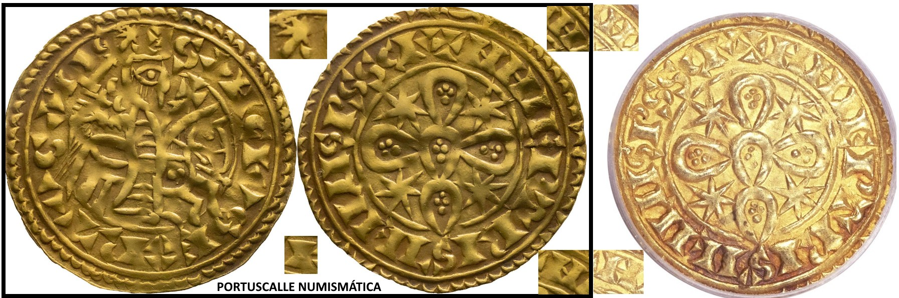

Aquela estrela junto à espada tem muita importância iconográfica. Vilipendiá-la é um acto vistoso, que até pode gerar cunhos desconhecidos. Há quem vá mais longe e diga que é extremely fine. O filósofo do enchido chamava a este tipo de peças "o restauro bem feito". Já o intelectual do photoshop, depois de ter percebido que tinha muitas no acervo, começou a ser complacente com a prática. O pregão era qualquer coisa como "Oh filhe, atã tu nã vez o que fizerã à mónálise"?